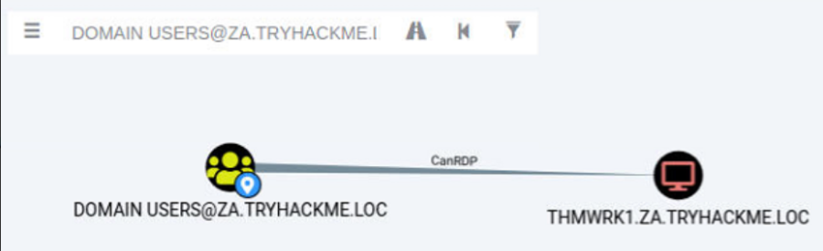
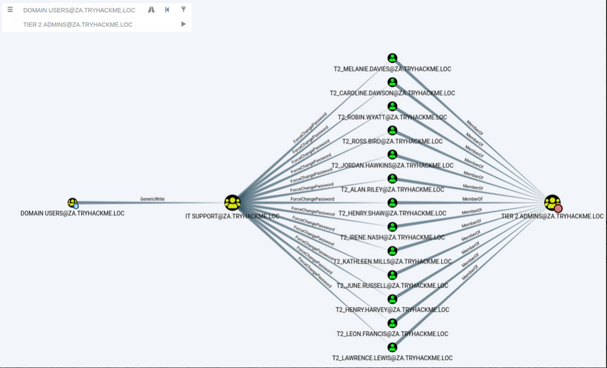
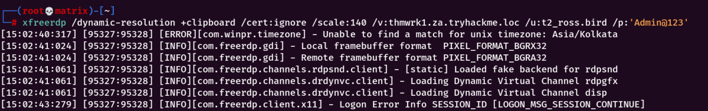

Permission Delegation
Exploiting Permission Delegation
Active Directory can delegate permissions and privileges through a feature called
Permission Delegation (not to be confused with
Kerberos Delegation that will be discussed in the
next task).
Delegation is what makes AD so powerful in organisations. Imagine we work for an organisation that has 50000 employees. Since we care about security, we only have three users that have access to DA credentials. It would be impossible for those three users to field all requests from the users, such as resetting their passwords. Using Delegation, we can delegate the permission to force change a user's password to the Helpdesk team, meaning they now have a delegated privilege for this specific function. In principle, to keep Delegation secure, the principle of least privilege should be followed. However, in large organisations, this is easier said than done. In this task we will look at exploiting some Delegation misconfigurations.
Permission Delegation
Permission Delegation exploits are often referred to as ACL-based attacks. AD allows administrators to configure Access Control Entries (ACEs) that populates Discretionary Access Control Lists (DACLs), hence the name ACL-based attacks. Almost any AD object can be secured with ACEs, which then describe the allowed and denied permissions that any other AD object has against the target object.
However, if these ACEs are misconfigured, it may be possible for an attacker to exploit them. Let's look at our example again. If the IT Support team were granted the ForceChangePassword ACE over the Domain Users group, this would be considered insecure. Sure they would be able to reset the passwords of employees that forgot their passwords, but this misconfiguration would allow them to also reset the passwords of privileged accounts, such as the accounts that are members of the Domain Admins group essentially allowing for privilege escalation.
Exploiting ACEs
A significant amount of ACEs can be misconfigured, and the exploits for each vary. The Bloodhound documentation assists in explaining enumerated ACEs and how they can be exploited. However, we will look at a couple of notable ones here:
[
https://bloodhound.readthedocs.io/en/latest/data-analysis/edges.html#]
▪ ForceChangePassword: We have the ability to set the user's current password without knowing their current password.
▪ AddMembers: We have the ability to add users (including our own account), groups or computers to the target group.
▪ GenericAll: We have complete control over the object, including the ability to change the user's password, register an SPN or add an AD object to the target group.
▪ GenericWrite: We can update any non-protected parameters of our target object. This could allow us to, for example, update the scriptPath parameter, which would cause a script to execute the next time the user logs on.
▪ WriteOwner: We have the ability to update the owner of the target object. We could make ourselves the owner, allowing us to gain additional permissions over the object.
▪ WriteDACL: We have the ability to write new ACEs to the target object's DACL. We could, for example, write an ACE that grants our account full control over the target object.
▪ AllExtendedRights: We have the ability to perform any action associated with extended AD rights against the target object. This includes, for example, the ability to force change a user's password.
In order to exploit these ACEs, we will need a method to interact with AD to make these requests. The two best options for this are the
AD-RSAT PowerShell cmdlets or
PowerSploit. Depending on the breach and the detection tools in the environment, one option may be stealthier. In this task we will show both.
BloodhoundWe ingested the provided loot file.
Privilege Escalation
If we search for our user account that was assigned in Task 1 in Bloodhound, we see that we don't have a lot of permissions. We have the ability to RDP into THMWRK1, but this will only provide us with low-privileged access.

Since the domain is tiered, our first step will be to compromise Tier 2 infrastructure. We need to compromise the Tier 2 Admins group since this group has administrative privileges on all workstations. Let's ask Bloodhound if there is perhaps a road that we can follow to compromise this group. Add your user account as the start position and the Tier 2 Admins group as the end position.

Bloodhound shows us a very interesting path. It seems that there was a slight bit of Permission Delegation in this domain. An administrator has misconfigured the Permission Delegation of the IT Support group by providing the Domain Users group with the AddMembers ACE. This means that any member of the Domain Users group (including our account) can add accounts to the IT Support Group. Furthermore, Bloodhound shows that the IT Support Group has the ForceChangePassword ACE for the Tier 2 Admins group members. This is not really a misconfiguration since Tier 2 admins are not that sensitive, but it provides a very potent attack path when combined with the initial misconfiguration. Let's exploit it!
AddMemberThe first step in this attack path is to add our AD account to the IT Support group. We will use the
Add-ADGroupMember PowerShell cmdlet from the
AD-RSAT toolset for this. Start PowerShell (either in RDP or via SSH) on the THMWRK1 host and run the following command to add your account:
Add-ADGroupMember "IT Support" -Members amy.kingWe can verify that the command worked by using the
Get-ADGroupMember cmdlet:
Get-ADGroupMember -Identity "IT Support"We should see our user
amy.king in the list.
ForceChangePasswordNow that we are a member of the IT Support group, we have inherited the ForceChangePassword Permission Delegation over the Tier 2 Admins group. First, we need to identify the members of this group to
select a
target. We can use the
Get-ADGroupMember cmdlet again to assist with this:
Get-ADGroupMember -Identity "Tier 2 Admins"I selected t2_ross_bird as target from the list.
We will use the
Set-ADAccountPassword AD-RSAT cmdlet to force change the password:
$Password = ConvertTo-SecureString "Admin@123" -AsPlainText -Force
Set-ADAccountPassword -Identity "t2_ross.bird" -Reset -NewPassword $Password Note: If you get an
Access Denied error, your permissions have not yet propagated through the domain. This can take up to
10 minutes. The best approach is to terminate your SSH or RDP session, take a quick break, and then reauthenticate and try again. You could also run
gpupdate /force and then
disconnect and
reconnect, which in certain cases will cause the synchronisation to happen faster.
If this step worked, you should now be able to authenticate to
THMWRK1 using this target account with its new password. You currently have administrative access to this workstation. Congratulations! You have officially escalated your privileged to Tier 2 Administrator by exploiting Permission Delegations.

As we can see, successful RDP with the newly set password into the Tier 2 Admin's account.